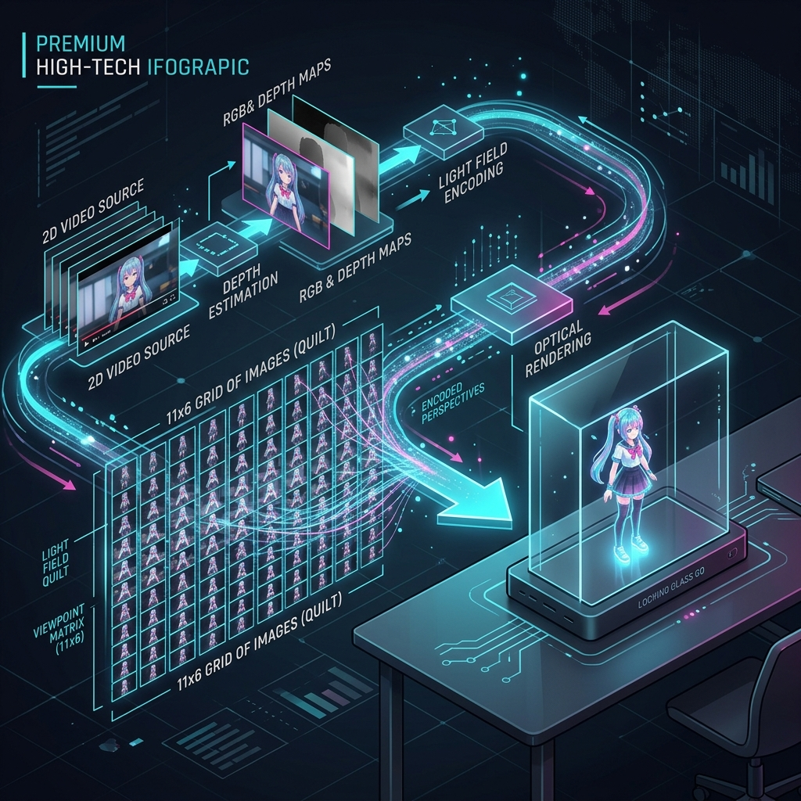

ComfyUI & Looking Glass Go: 空間映像制作の全工程
従来の3D映像制作には、複雑なマルチカメラセットアップや、高価なステレオスコピック機器が必要でした。 しかし、現代のAI技術、特にDepth Estimation（深度推定）の進化により、 一般的な2Dビデオから息を呑むような立体映像を生成することが可能になりました。

この展示では、ComfyUIをベースとしたカスタムパイプラインを使用しています。 最新のVideo Depth Anything (V3)モデルが、映像の1フレームごとに数ミリメートル単位の 正確な距離情報を計算し、2D映像に「空間の奥行き」を与えます。
Looking Glass Goは、Quilt（キルト）と呼ばれる特殊な格子状の映像形式を読み込みます。 AIが生成した1枚のRGBD画像から、計算によって異なる角度から見た「66個の視点」を瞬時に合成します。
深度情報に基づいて、ピクセルを左右に微妙にズラす（視差を与える）ことで、 あたかもそこに空間が存在するかのような視覚効果を生み出します。
この驚異的な空間体験を支えるのは、NVIDIAの最新アーキテクチャGB10 (Grace Blackwell)を搭載した DGX SPARKシステムです。
安定した立体映像の生成と展示運用のため、以下の技術的制約を設けています。
※ 90秒を超える動画生成は、システムメモリの枯渇によるハングアップのリスクが高まるため、分割生成を推奨します。